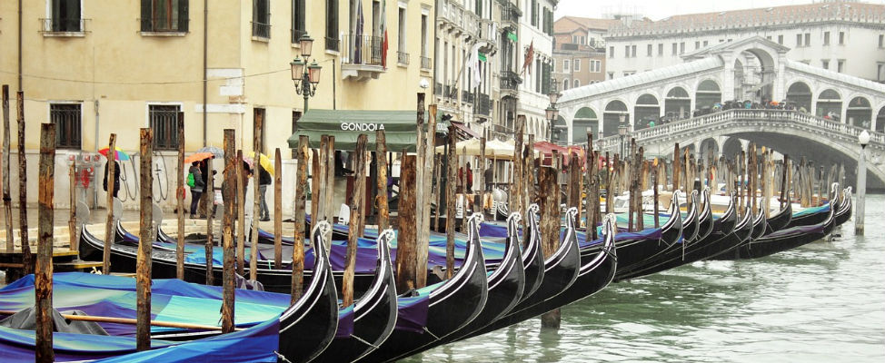

Overtoerisme
Een actueel woord dat al snel in verband met Venetië genoemd wordt is overtoerisme. Dit is de overtreffende trap van massatoerisme. Venetië is één van de plekken, net als Barcelona en Amsterdam, dat met dit verschijnsel te maken heeft. Het betekent eigenlijk dat er meer toerisme naar een plek komen dan dat de betreffende bestemming eigenlijk aankan. Denk daarbij onder andere aan de infrastructuur die zo zwaar belast wordt dat er eigenlijk een voor iedereen onaangename situatie ontstaat. Toeristen hebben te kampen met lange wachtrijen bij bezienswaardigheden, ondercapaciteit bij het openbaar vervoer en drukke straten en pleinen en straten waar je op de drukste momenten niet meer normaal kan lopen. Voor inwoners komt de leefbaarheid in het gedrang. In Venetië klagen de bewoners ook nog over het vrijwel continu aanwezige geluid van de zogenaamde rolkoffertjes.

Geschiedenis van Venetië
De eerste bewoners op de eilanden woonden er al voor het begin van onze jaartelling. Van een serieuze nederzetting was toen nog geen sprake. De naam Venetia kwam voor het eerste voor in het Romeinse tijdperk. Het waren vooral vissers die op de zandbanken tussen de visrijke wateren woonden. Welgestelde Romeinen begonnen in Venetia hun zomerverblijven te bouwen. In de vijfde en zesde eeuw begon inmiddels sprake te zijn van serieuze nederzetting. Het waren vooral vluchtelingen die Venetia kwamen bewonen. Er was nog geen sprake van één stad, maar meerdere dorpen die binnen de lagune ontstaan waren. In de negende eeuw begonnen de dorpen te transformeren tot één stad. Bruggen werden aangelegd om de eilanden met elkaar te verbinden en Venetië kreeg een beschermheilige: Marcus van Alexandrië. De evangelist Marcus werd in 68 na Christus in Alexandrië om het leven gebracht. In het jaar 828 werden de vermoedelijke relieken van Marcus overgebracht naar Venetië. Daar worden ze sinds 1071 bewaard in de Basilica di San Marco. Deze kathedraal staat aan het San Marcoplein. De Venetianen waren uitstekende zeevaarders. Hun vloot groeide uit tot de grootste en sterkste van de regio.

De zinkende stad
Venetië voert al jarenlang een strijd tegen het water. Zo gebeurt het meerdere keren per jaar dat de stad te maken krijgt met overstromingen vanuit de Adriatische Zee. Deze overstromingen komen vooral voor in het winterseizoen. De afgelopen jaren zie je dat overstromingen ook steeds vaker voor komen buiten de periode november-februari. Op momenten dat de stad te maken krijgt met overstromingen dan kun je op veel plekken alleen nog maar over tijdelijke verhogingen lopen.

Top 10 bezienswaardigheden
De hele stad Venetië is eigenlijk één groot openluchtmuseum. Toch kent de stad zeker een aantal must-do’s.
De site top10bezienswaardigheden.nl heeft de hotspots van Venetië op een rijtje gezet:
Venetië bezienswaardigheden top 10

Eten en drinken
In Venetië kun je goed eten, zoals het ook hoort in Italië. Zoals in iedere toeristenstad heb je ook hier te maken met de zogenaamde toeristenfuiken, waarbij je slecht tot matig eten krijgt en/of veel te veel betaalt voor hetgeen je geboden wordt. Hoe aanlokkelijk een toeristenmenu ook lijkt, de echt goede restaurants en trattoria hebben dit niet nodig om klanten binnen te halen.